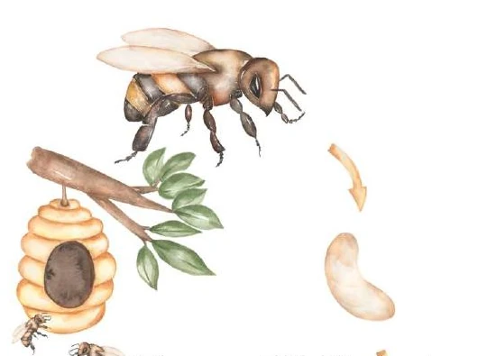
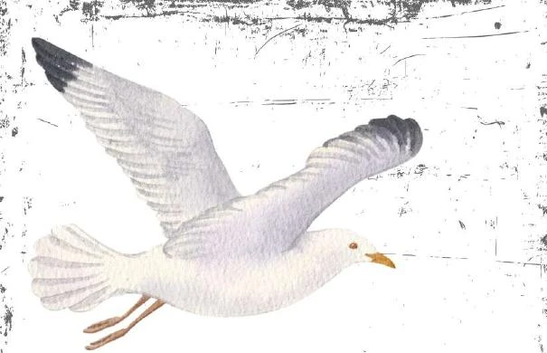
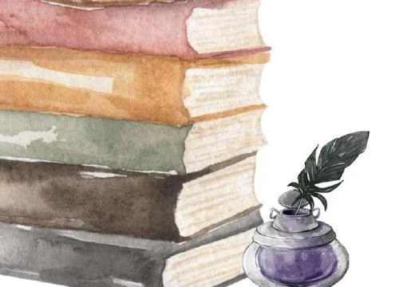

A poetry collection by Maya Oakes
A Spiral
Under
Poems of life, memory, loss, and the quiet science of being human.

p. 02 Spring The Biologist The living self in close observation: bodies and bonds, desire and illness, inherited wounds, and the instincts that carry us toward survival.
p. 17 Summer The Silent Cartographer A quiet witness records atrocities, erased places, displaced lives, and what others learn not to see.
p. 23 Autumn The Philosopher A season of questions: choice, identity, consciousness, memory, meaning, and the shape of a life. p. 38
Winter
The Ethnographer
Near the fire, stories preserve folklore, ritual, shared memory, and what one generation carries into another.
p. 46
Small forms & fragments
Loose Leaves
Brief pieces that sit outside the four voices while remaining part of the spiral.
p. 38
Winter
The Ethnographer
Near the fire, stories preserve folklore, ritual, shared memory, and what one generation carries into another.
p. 46
Small forms & fragments
Loose Leaves
Brief pieces that sit outside the four voices while remaining part of the spiral.
Browse by theme
What do you want to read about?
- Prologue Prologue · Before the seasons
- These pets of mine Spring · Biologist
- Blue canary Spring · Biologist
- Thoughts keep on buzzing Spring · Biologist
- The other shoe Spring · Biologist
- Dark lessons Spring · Biologist
- Betrayal Spring · Biologist
- Riding the pain Spring · Biologist
- Water skippers Spring · Biologist
- The gift Spring · Biologist
- Yearning Spring · Biologist
- Blackberry bush Spring · Biologist
- Catching salmon Spring · Biologist
- A place Spring · Biologist
- You age like milk Spring · Biologist
- Recurrency Spring · Biologist
- Map I: Eulogy to Unborn Summer · Silent Cartographer
- Map II: Road That Only Goes Out Summer · Silent Cartographer
- Map III: Skirmish on the Border Summer · Silent Cartographer
- Scroll to another reel Summer · Silent Cartographer
- The Felling of the Good Tree Summer · Silent Cartographer
- When the sky falls Summer · Silent Cartographer
- Autumn Prelude Autumn · Philosopher
- Paintbox Autumn · Philosopher
- October Readme Autumn · Philosopher
- Aivolved Autumn · Philosopher
- Toil Autumn · Philosopher
- Shame is... Autumn · Philosopher
- Brittle Autumn · Philosopher
- Fears, unlisted Autumn · Philosopher
- Blue curtain Autumn · Philosopher
- no north Autumn · Philosopher
- Overflow Autumn · Philosopher
- Linocut Autumn · Philosopher
- A Spiral Under Autumn · Philosopher
- A Song of Home Autumn · Philosopher
- Legacy Autumn · Philosopher
- Coffee shop Winter · Ethnographer
- Twelve Plates on Christmas Eve Winter · Ethnographer
- Koschei and the Prince Winter · Ethnographer
- Farmer and the One-Eyed Likho Winter · Ethnographer
- Leshy and the Hunter Winter · Ethnographer
- The iguana tree Winter · Ethnographer
- Love in the C and D key Winter · Ethnographer
- The Heirs Winter · Ethnographer
- Work slips Loose Leaves · Small forms & fragments
- Breathe in the colours Loose Leaves · Small forms & fragments
- Silence is the smallest poem Loose Leaves · Small forms & fragments
No poems match that topic.